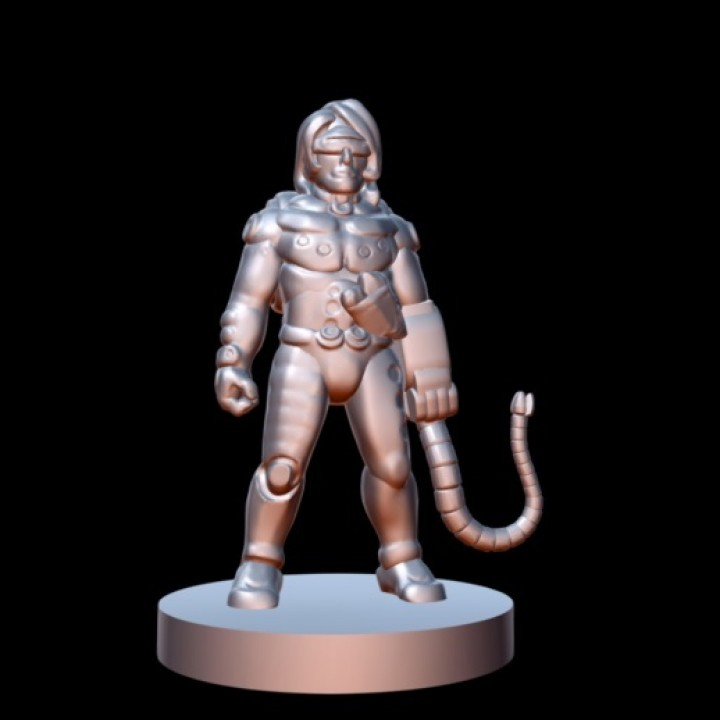
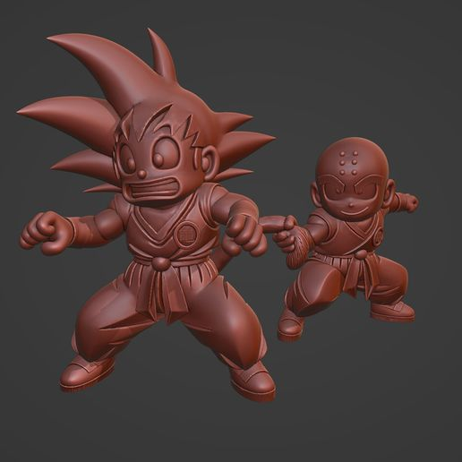
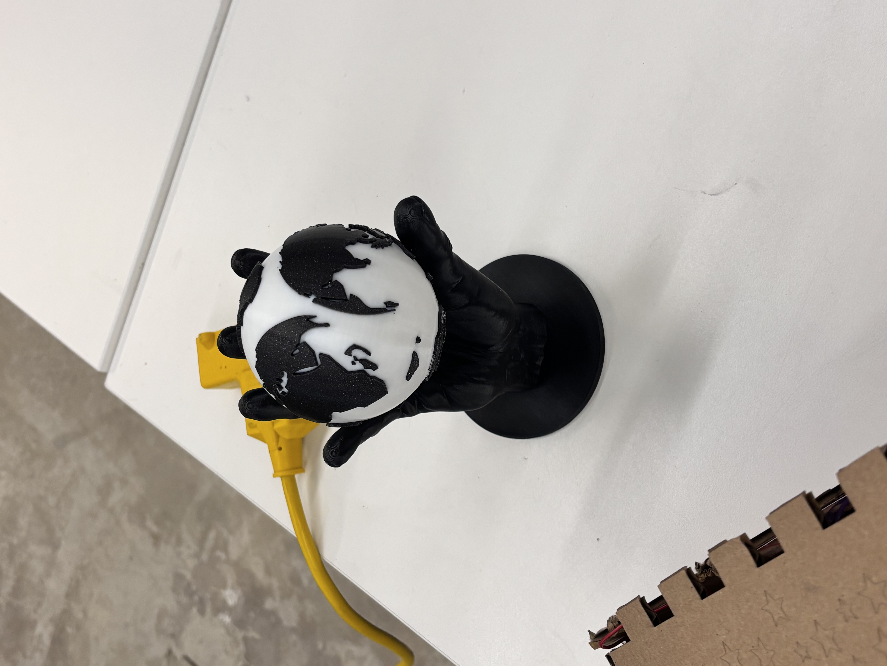
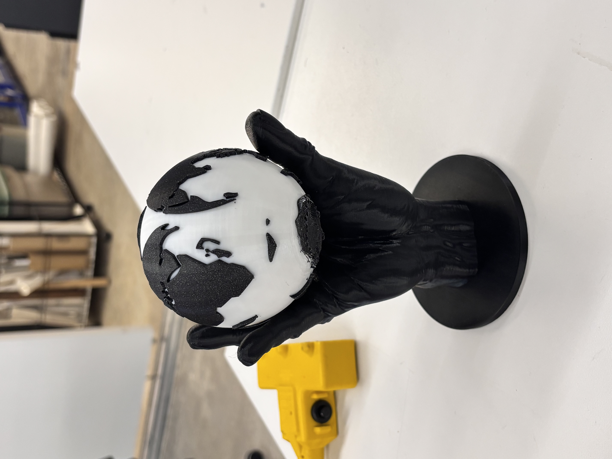
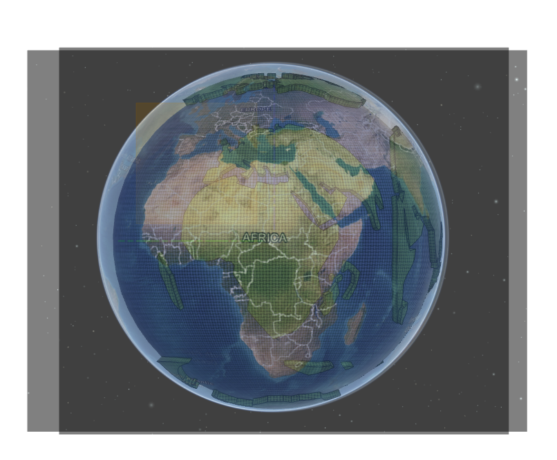
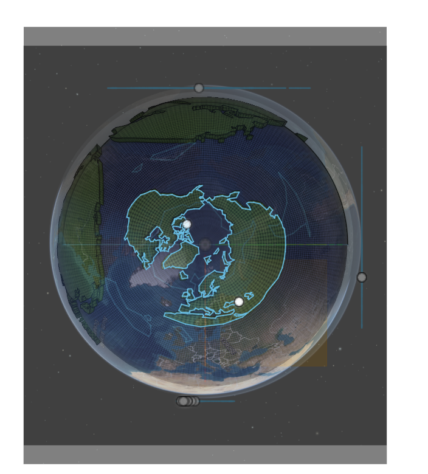
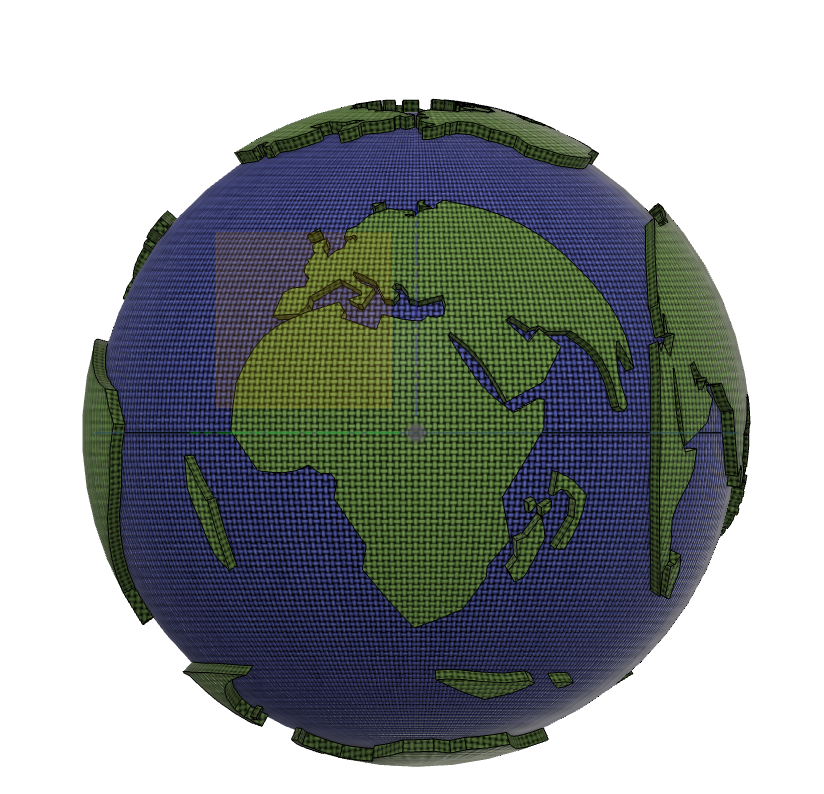
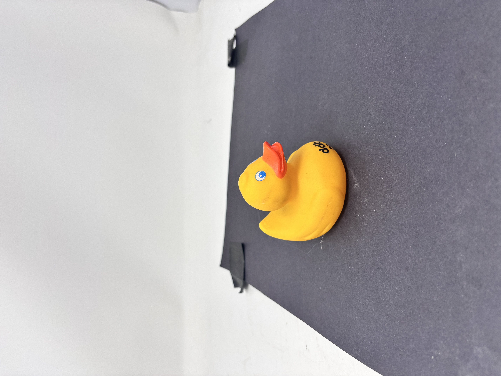
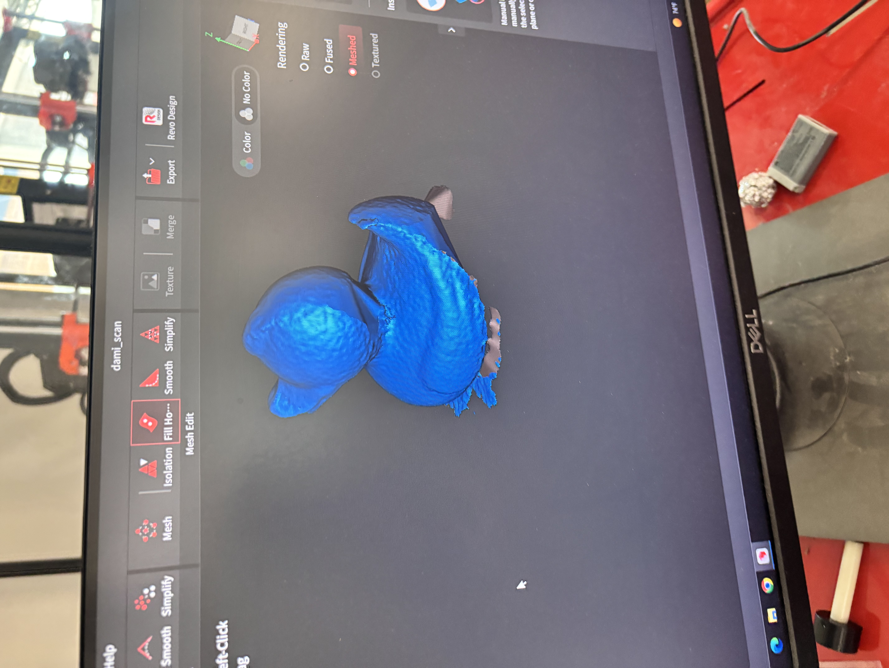
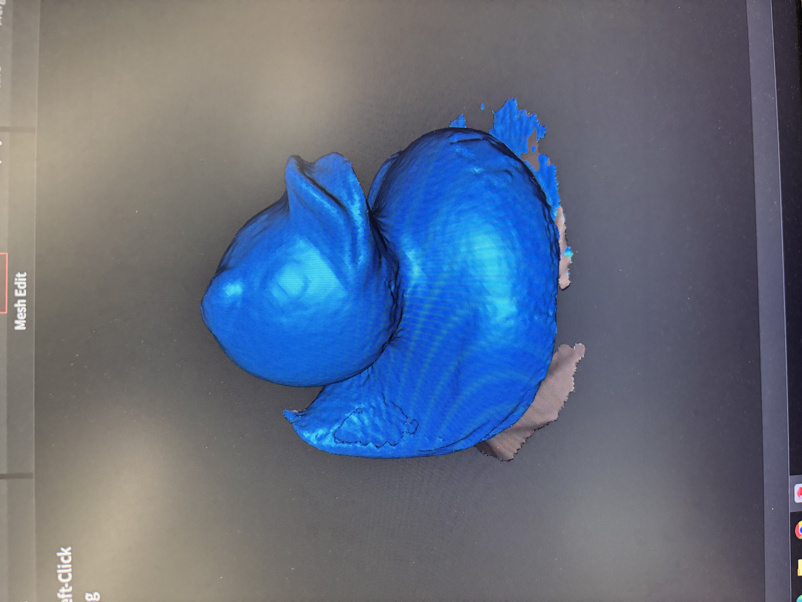

<div class="textcontainer">
<p class="margin"> </p>
<h2 class="main-header">Week 5: 3D Design, Printing, and Scanning</h2>
<p class="margin"></p>
<h4 class="section-header">3D Printing Project: Hand Holding a Globe</h4>
<div class="section-container">
<p>For this week, I wanted to take inspiration from figurines and fictional models I've seen made in software like Blender and then physically fabricated as decoration pieces. I decided to create a realistic hand holding a globe-like sphere, with the idea of "the world is my oyster" / "holding the world" as the visual theme.</p>
<div class="image-grid-2">
<p></p>
<p></p>
</div>
<p class="caption">A few Blender figurine-style prints I used as inspiration for this project.</p>
<p>This project was split into two prints: the hand and the globe. I originally considered modeling a hand from scratch, but that would have taken too long, so I used an existing realistic hand model and focused my CAD work on designing the globe.</p>
<div class="image-grid-2">
<p></p>
<p></p>
</div>
<p class="caption">Final result: a hand holding a globe, printed as two parts and assembled.</p>
</div>
<h4 class="section-header">Modeling the Globe (Fusion 360)</h4>
<div class="section-container">
<p>I started with a sphere, then used a 3D globe rendering website to take reference screenshots (front, back, left, right, top, bottom). I imported these images into Fusion 360 and manually traced continents/islands as sketches for each view. After sketching, I embossed each landmass sketch onto the sphere surface.</p>
<p>In theory this approach was straightforward, but I ran into two main issues:</p>
<ul>
<li><b>Scaling and overlap:</b> getting every landmass to fit cleanly on the curved surface was harder than expected. Some features required scaling adjustments that reduced real-world proportional accuracy between continents.</li>
<li><b>Curved reference distortion:</b> using screenshots from a curved globe view meant some landmasses were cut off near the edges. When embossed, this created awkward curve cutoffs (noticeable in places like parts of the Americas and Asia).</li>
</ul>
<p>If I did this again, I would use a flat world map image for the side views (split into four sections) and only use the 3D globe reference for the top and bottom. Even with these imperfections, the globe still printed successfully and worked well for the concept.</p>
<div class="image-grid-3">
<p></p>
<p></p>
<p></p>
</div>
<p class="caption">Reference images imported into Fusion, traced landmasses, and the final embossed globe model.</p>
</div>
<h4 class="section-header">Slicing, Supports, and Printing</h4>
<div class="section-container">
<p>I printed both the hand and the globe using organic supports (my first time using them on the Prusa). Compared to standard supports, organic supports reduced print time and were easier to remove.</p>
<p>For the globe, I used the multi-filament Prusa in the lab for the first time. The setup felt similar to a standard Prusa workflow, but the multi-material capability made it possible to achieve the color contrast I wanted for the globe.</p>
<p>Organic supports worked especially well for this print: they reduced print time and came off cleanly compared to standard supports.</p>
</div>
<h4 class="section-header">3D Scanning: Rubber Ducky</h4>
<div class="section-container">
<p>For the scanning task, I used the lab scanner to create a photogrammetry scan of a rubber ducky. This was harder than I expected: rapid movement or even small pose changes would break the scan, so it took some time to learn how to rotate around the object smoothly and consistently to capture all angles.</p>
<div class="image-grid-2">
<img class="project-img" src="./duck_for%20scan.jpeg" alt="Rubber ducky used for scanning">
<p></p>
</div>
<p class="caption">The object I scanned (rubber ducky) before capturing the mesh.</p>
<p>After getting a good scan attempt, I did some light cleanup: filling holes that weren't patched automatically and deleting parts of the rotating platform surface. The final result captured the overall shape well, but it didn't capture small details (like the eyes and finer beak features) as cleanly as I wanted. To improve detail, I would scan longer and/or use a setup that captures more fine-grained surface information.</p>
<div class="image-grid-2">
<p></p>
<p></p>
</div>
<p class="caption">Scan result after capture/cleanup (overall shape captured well, fine details less sharp).</p>
</div>
<h4 class="section-header">Files</h4>
<div class="section-container">
<p>Download links for the design and fabrication files:</p>
<ul>
<li><b>Globe STL:</b> <a download href="./GLOBE_stl.stl">Download globe STL</a></li>
<li><b>Globe G-code:</b> <a download href="./GLOBE_stl_0.15mm_PLA_MK3S_13h24m.gcode">Download globe G-code</a></li>
<li><b>Hand print file (3MF):</b> <a download href="./Hand_big%20with%20stand.3mf">Download hand 3MF</a></li>
</ul>
</div>
</div>